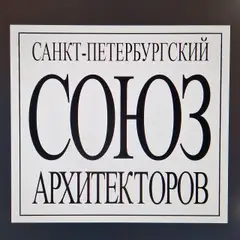

Подборка редакции · Петербург
Кофейни, книжные и бары из ленты
Кофейня на пяти этажах дома модерн, книжный об искусстве, старинная аптека, фотоателье Буллы и бар в кабинете графа Шувалова — места, где красиво внутри и куда редко доходят туристы.
- 12 мест
- до 3 000 ₽ на человека
Что в подборке 12
Садовая ул., 21А
Новое
Кофейня на всех пяти этажах модернового дома 1903–1904 годов: лестница модерн, исторические окна, зелень на первом этаже и мини-оранжерея на втором.
Подробнее и маршрут: Дом ФлоуПозвать сюда: Дом Флоу
Фото здания: Артём Светлов, CC BY-SA 4.0 · Wikimedia Commons
Караванная ул., 5
Новое
Спокойный зал в духе скандинавского модернизма: винтажная европейская мебель и лампы, полки с книгами об архитектуре, лавка с посудой и хлебом. Светлее всего днём.
ул. Чайковского, 56
Новое
Светлая минималистичная кофейня в «амстердамском» духе с завтраками весь день; тихий квартал у Таврического сада — удобно начать отсюда прогулку.
Барочная ул., 6, стр. 1
Новое
Книги об искусстве, архитектуре, моде и фото в ванильно-жёлтом и сером зале с кофейней и выставочной зоной; есть редкие издания. Утром в будни пусто.
Подробнее и маршрут: Masters BookstoreПозвать сюда: Masters Bookstore
Дмитровский пер., 4
Новое
Камерный философский книжный у Дмитровского сквера: книги прямо от издательств, полки букинистики на немецком и английском, вечерние лекции.
ул. Профессора Попова, 10
Новое
Деревянный дом среди каменной Петроградки, где в 1912 году Матюшин устроил штаб авангарда; мемориальные комнаты с работами его круга и Елены Гуро.
Подробнее и маршрут: Музей петербургского авангарда (Дом Матюшина)Позвать сюда: Музей петербургского авангарда (Дом Матюшина)
Фото: MaryannaNesina, CC BY 3.0 · Wikimedia Commons
7-я линия В.О., 16–18
Новое
Торговый зал старинной аптеки с деревянными шкафами, склянками и обстановкой начала XX века; здесь же бывают камерные концерты. Приходить утром в будни.
Подробнее и маршрут: Музей «Аптека доктора Пеля»Позвать сюда: Музей «Аптека доктора Пеля»
Фото: Olksolo, CC BY-SA 4.0 · Wikimedia Commons
пл. Искусств, 3
Новое
Квартира художника 1920–30-х годов: стены от пола до потолка завешаны его коллекцией русской живописи, как в старом салоне, окна смотрят на площадь.
Подробнее и маршрут: Музей-квартира Исаака БродскогоПозвать сюда: Музей-квартира Исаака Бродского

Большая Морская ул., 52
Новое
Парадные залы банкирского особняка с резным деревом, лепниной и старинными интерьерами; полуторачасовая экскурсия, а вечером — концерты при свечах. Внутрь — только с экскурсией или на концерт, запись заранее.
Подробнее и маршрут: Особняк Половцова (Дом архитектора)Позвать сюда: Особняк Половцова (Дом архитектора)
Фото: Редактор РТОО СПБ СА, CC BY-SA 4.0 · Wikimedia Commons
Невский пр., 54
Новое
Интерьеры старинного фотоателье Буллы с небольшой экспозицией о мастере; в декорациях можно сниматься, бывают вечера с концертом. Лучше днём при дневном свете.
Подробнее и маршрут: Музей-фотосалон Карла БуллыПозвать сюда: Музей-фотосалон Карла Буллы
Фото: Karl Bulla, общественное достояние · Wikimedia Commons
Моховая ул., 10
Новое
Бар в отреставрированном кабинете графа Шувалова в особняке 1854 года: тонкая лепнина и сине-розовый потолок, под который придуман фиолетовый негрони.
Подробнее и маршрут: Academia Bar ShuvaloffПозвать сюда: Academia Bar Shuvaloff
ул. Рубинштейна, 13
Новое
Коктейльный бар без вывески: замкнутый полутёмный зал в строгом минимализме, где всё внимание на стойке. Дверь легко пропустить даже на Рубинштейна.
Подробнее и маршрут: АрхитекторПозвать сюда: Архитектор
Фото здания: Александр Сигачёв, CC BY-SA 4.0 · Wikimedia Commons


Как позвать
- Выбери план, место или событие — в карточке адрес, цены и маршрут в Яндекс Картах.
- Нажми «Позвать сюда» — соберётся приглашение-игра для свидания или голосование для компании.
- Отправь ссылку в любой мессенджер: тебе ответят, а компания отметит, куда и когда может. Бесплатно и без регистрации.